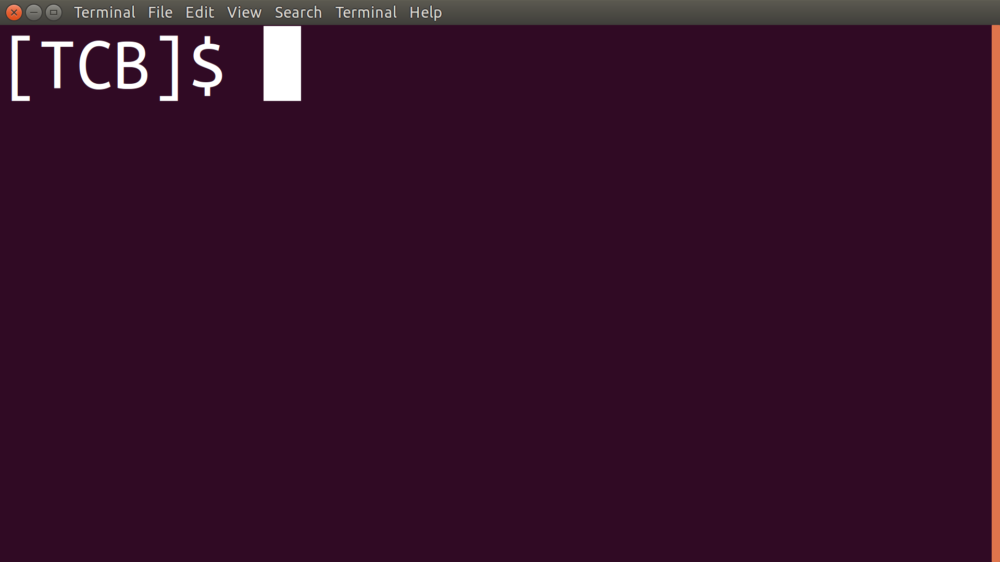

CODE DANGEROUSLY
Welcome to the [TCB] website!
Hi there, I'm Thomas Callum Brook ([TCB]), an aspiring web developer and the producer of the site you see before you. To date I have received the majority of my knowledge through guided tutorials such as those provided (for free!) by the Learn Enough Society. Many thanks for all your content!
The site design (as you might recognise), is an homage to my favoured development Operating System,
Background
The [TCB] site has been created utilising HTML coding, with CSS styling, and employs Jekyll a great static website production software. You've got to love Liquid with Includes, anything which keeps your code looking neater and DRYer, is a bonus!
Most recent post
JavaScript Assets in Rails

It’s been forever since I’ve posted, so I thought I’d start a theme. Whenever I solve a mini problem I’ve experienced in my new web dev career, I’ll make a mini post about it. The title will be the problem, and the post my solution. This will serve as a reminder to myself how I fixed the issue, should I encounter it again and also as a possible helping hand to others in future should I make the blog more far reaching.
Who am I?!
Thomas Callum Brook
A graduate BSc Biochemist with 1st class honours, I've spent the majority of my life pursuing knowledge, mostly in the scientific field. Moving from biochemistry to microbiology, with bioinformatic analysis: my first taste of the power and utility of programming. Although I enjoyed my time as a scientist, I have begun a new phase in my career. Driven by my enjoyment of the programming process as a fledgling bioinformatician (using Python to extract vital information from bacterial and viral DNA), I have entered down a new path, that of the web developer. These are my first forages into the possibilities that web development can provide.
This new path isn't surprising to me, given a long-standing enthusiasm for technology as a whole. Some people are fascinated with the engineering prowess of top-of-the-line vehicles, and can spend hours pouring over images and specs of the latest Ferrari. I am much the same, but my niche is more along the lines of the latest CPUs and GPUs. Don't get me wrong, most of the in-depth techno-jargon will go over my head, but that doesn't mean I haven't spent countless hours watching Youtube channels like Linus Tech Tips.
With that in mind, I've included a brief overview of my two hardware companions, who help me do whatever techno-challenge I'm facing, whether it be programming or casual PC gaming...

My Tools: The Powerhouse
This understated black box is my go to powerhouse of computing. As I love going over tech specs of various computer components, this is my home build PC. Built with cost effectiveness in mind (initially...) a couple of years ago, with an Intel i3-4160 CPU, 8GB of Low Profile (LP) Corsair Vengeance DDR3 RAM, and an NVIDIA 750 TI GPU: you might notice a lack of RGB lighting, I'm a believer in function over form in technology, and sadly flashing lights don't make the computer work faster...
I have since updated (spoiled myself), with an Intel i7-4790k CPU, another 8GB (16GB total) of LP RAM, and an NVIDIA GTX 1070 mini by Zotac. At this point it can pretty much do anything I could want, and I'll probably stick with her, as is, until she breaks or becomes obsolete compared to newer technology.
Oh don't mention the cable management, errrr...

My Tools: X220
This iconically designed chunky monkey, is my go to development tool. The ThinkPads, inherited from IBM by Lenovo, are great for their rugged durable design and great keyboards. Whilst new releases in this range are crazy expensive, due to the quantity produced for businesses it's common for these productive little numbers to be available cheaply as refurbs a few years down the line, once businesses upgrade their devices. You know they're durable when they're the laptops used on the International Space Station...
I picked up this one a couple of years ago, for just over £200: with a 256GB SSD hard-drive and 2nd Gen mobile i5 CPU, and it does everything I want from a utility laptop. Plus, I do really like the style even if it isn't one of the new sleek Ultrabooks you see today.
That said, as soon as the new range of Thinkpads with their Quad-core, power efficient (15W), 8th Gen Intel chips start to come down in price, I'm pretty sure I'll be looking for an update. I'm looking at you, 6th Gen X1 Carbon *drools*.
Sorry X220, I do still love you.